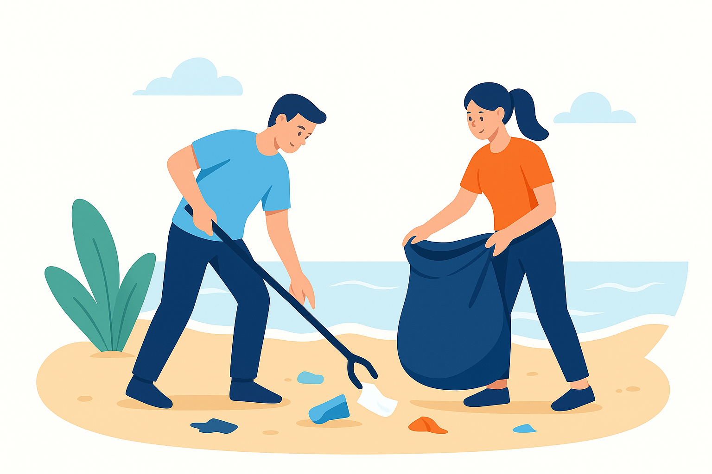
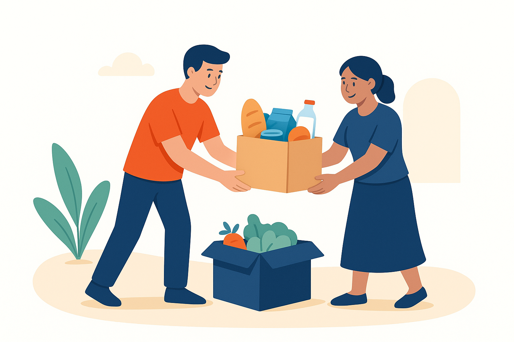
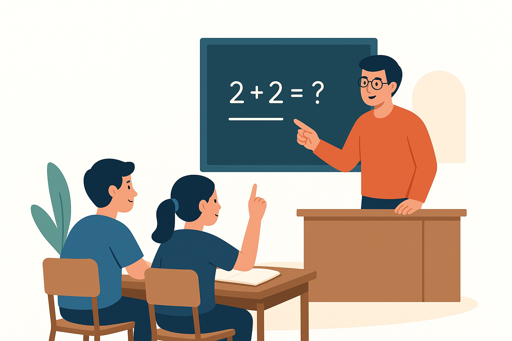

Limpeza de Praias
Sábado, 05/10/2025
Participe de uma ação ambiental para limpar praias da cidade.
Tenho interesse
Sábado, 05/10/2025
Participe de uma ação ambiental para limpar praias da cidade.
Tenho interesse
Domingo, 06/10/2025
Ajude a distribuir cestas básicas para famílias carentes.
Tenho interesse
Segunda, 07/10/2025
Ensine crianças carentes em um projeto de reforço escolar.
Tenho interesse